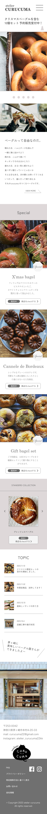

scroll
#04
atelier CURUCUMA (ベーグル＆焼き菓子専門店) ウェブサイト
design
概要
- 内容
- WEBフロントエンド構築の職業訓練校に入学後、3ヶ月目に行った自由制作。 9月にWEBショップオープン、2024年1月に実店舗オープン予定のベーグル&焼き菓子専門店から制作許可と素材提供を頂き、作成させて頂きました。 現在は、インスタグラムが主な集客方法で、squareで販売を行っています。ベーグル愛好家からSNSを通じて広まり、インスタに販売情報アップとともに 即完売。1月オープン予定の実店舗兼カフェの集客にもつなげていきたい。こだわりのオリジナル商品を、日常のちょっとだけリッチなご褒美タイムを求める女性に向けて。 シンプルでありながらも、上質感やカフェにいるようなゆったり感を体感して頂けるように作成しています。
- 目的
- 認知向上、売上向上
- ターゲット
- ベーグル愛好家の30代、40代女性。自分へのご褒美
- 制作期間
- デザイン2日間
- 使用ツール
- adobeXd / Photoshop / illustrator
情報設計
- トップ画面のスライダーで美味しさが伝わるイメージを提供
- インターネットからお店を発見頂くお客様が多い為、商品のシズル感をダイレクトに感じていただけるようシンプルなデザインと大きな画像配置にしています。
- おすすめの季節商品を大きく掲載
- 季節ごとの数量限定商品が多い為、それを楽しみにしているリピーターのお客様も多数いらっしゃいます。期間限定商品を通常商品と差別化しゆったりと配置することで 見つけやすく、目立つようにしています。
- 作り手の現場を伝えるTOPICの掲載
- 店主のインスタグラムからは、とにかくこだわって楽しんで美味しいものを作る姿勢が伝わってきます。実店舗の様子や、試作の様子など、美味しさの裏側も魅力の一部になり ファンの獲得につなげます。
デザイン
pc

tablet

mobile
